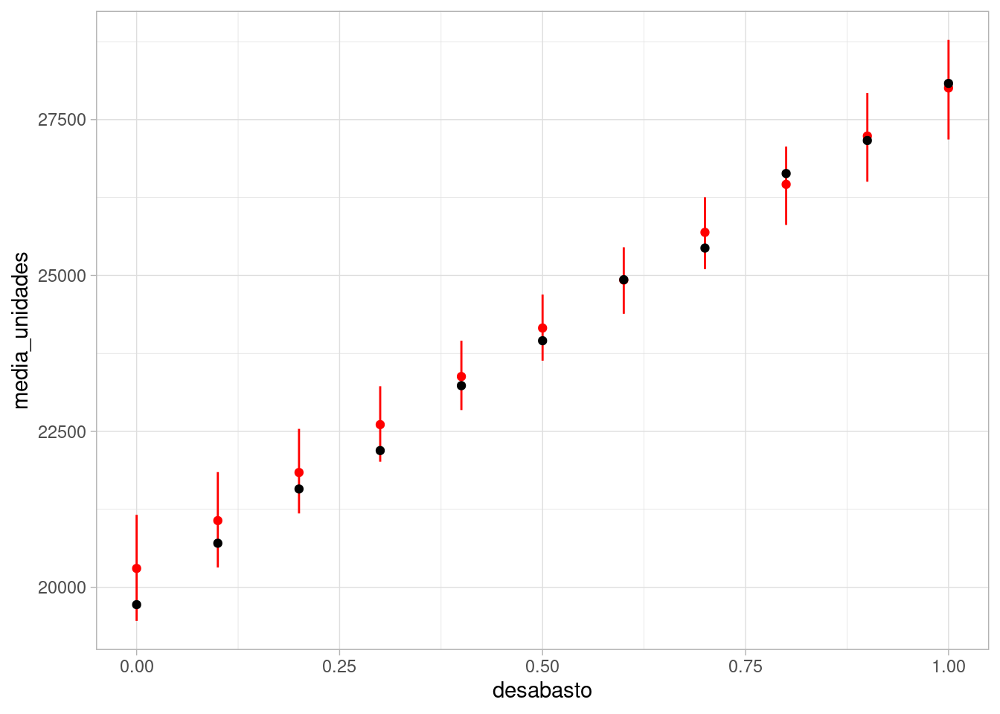

Código
library(tidyverse)
library(kableExtra)
library(DiagrammeR)
ggplot2::theme_set(ggplot2::theme_light())En esta parte consideramos nuestros modelos gráficos no simplemente como maneras de factorizar un modelo probabilístico, sino también como una manera de establecer nuestros supuestos causales acerca del problema de interés. Estos son supuestos que son necesarios para hacer inferencia causal.
Comenzaremos entonces con una pregunta fundamental de inferencia causal: ¿qué sucede si modificamos una variable \(X=x\) en una respuesta \(Y\)? ¿Podemos estimar este efecto a partir de datos observados? La respuesta dependerá de nuestros supuestos causales, y veremos varios ejemplos de cuándo es posible y cómo identificar y calcular estas estimaciones causales.
library(tidyverse)
library(kableExtra)
library(DiagrammeR)
ggplot2::theme_set(ggplot2::theme_light())Desde el punto de vista de Pearl, nuestro objeto principal de interés es la distribución condicional de la respuesta dada una manipulación, que define como \[p(y | do(x))\] Esto significa: ¿cómo se distribuye la \(Y\) dado que intervenimos en la población completa (aunque podemos también considerar subpoblaciones más adelante) para poner en \(X=x\)?. En primer lugar, notemos que esto no es lo mismo que la distribución
\[p(y|x)\] que podemos estimar directamente de los datos.
Supongamos que tenemos el siguiente modelo del diagrama causal:
grViz("
digraph {
graph [ranksep = 0.2]
node [shape=plaintext]
edge [minlen = 3]
U_t -> T
T -> A
T -> Z
U_a -> A
U_z -> Z
}
")donde \(T\) es la temperatura, \(A\) son las unidades de agua embotellada vendida y \(Z\) es la actividad de los mosquitos (medido con muestreo, por ejemplo). Mostramos también otras variables causales que pueden afectar a las variables de interés (muchas veces omitimos estas variables que solo afectan a una variable de interés), pero que no tienen efecto sobre otras variables del diagrama.
No interesa contestar la pregunta: ¿qué tanto influyen las ventas de agua embotellada en la actividad de los mosquitos? Del diagrama, sabemos que no hay ningún camino causal de \(Z\) a \(T\), por lo que nuestra respuesta debería ser igual a 0.
Sin embargo, sabemos que estas dos variables están asociadas (por el análisis de DAGs), de manera que describir cómo cambia \(p(z|a)\) cuando condicionamos a distintos valores de \(a\) no responde nuestra pregunta. La distribución \(p(z|do(a))\) nos dice cómo se distribuye \(X\) cuando manipulamos \(a\) artificialmente. Por ejemplo, si cerramos todas las tiendas un día haciendo \(do(a=0)\), veríamos que esta variable no tiene efecto sobre la actividad de mosquitos, por ejemplo comparado con \(do(a = 10000)\).
Ilustramos la diferencia entre \(p(y|x)\) y \(p(y|do(x))\) simulando del ejemplo anterior. Supondremos que sólo consideramos un día del año a lo largo de varios años, para no modelar el comportamiento cíclo de la temperatura:
simular_t <- function(n = 10, dia = 150){
# simular un año, alrededor del día 160 (en junio)
t_maxima <- rnorm(n, 28, 2)
mosquitos <- rpois(n, 250 + 10 * (t_maxima - 28))
unidades <- rnorm(n, 20000 + 2000 * (t_maxima - 28), 2000)
tibble(t_maxima, unidades, mosquitos)
}
set.seed(128)
simular_dias <- simular_t(50)Si simulamos, vemos que \(mosquitos\) y \(unidades\) son dependientes, pues tenemos un camino abierto dado por la bifurcación en temperatura:
ggplot(simular_dias, aes(x = unidades, y = mosquitos)) + geom_point() +
geom_smooth(method = "loess", method.args = list(degree = 1)) +
xlab("Ventas de agua embotellada")`geom_smooth()` using formula = 'y ~ x'
Sabemos que esta asociación no es causal, pues no hay caminos causales entre estas variables dos variables, pero que hay una dependencia debido a la bifurcación en \(T\). La gráfica muestra que la media condicional \(E[M|A=a]\) depende fuertemente de \(a\), lo que quiere decir que \(p(m|a)\) depende de \(a\) fuertemente.
En este caso, nos interesaría saber qué sucede si alteramos artificalmente el número de botellas de agua vendidas (puedes imaginar distintas maneras de hacer esto).
Cuando hacemos esto, quitamos las aristas que van hacia \(A\), pues \(A\) ya no está determinado por el proceso generador de datos. Tenemos entonces la nueva gráfica:
grViz("
digraph {
graph [ranksep = 0.2]
node [shape=plaintext]
A
edge [minlen = 3]
U_t -> T
T -> Z
U_m -> Z
{ rank = same; A; Z }
}
")En esta nueva gráfica, \(A\) y \(Z\) son independientes, que es la respuesta correcta. Veamos cómo simularíamos de esta gráfica después de la cirugía. Establecemos un valor fijo de unidades, y seguimos el resto del modelo:
simular_cirugia <- function(n = 10, unidades = unidades){
# simular un año, alrededor del día 160 (en junio)
t_maxima <- rnorm(n, 28, 2)
mosquitos <- rpois(n, 250 + 10 * (t_maxima - 28))
unidades <- unidades
tibble(t_maxima, unidades, mosquitos)
}Y ahora simulamos y graficamos \(p(c|do(u))\) para distintos valores de \(u\):
set.seed(128)
simular_dias_2 <- map_df(seq(10000, 30000, 1000),
\(u) simular_cirugia(50, unidades = u))ggplot(simular_dias_2, aes(x = unidades, y = mosquitos)) +
geom_point() + geom_smooth()`geom_smooth()` using method = 'gam' and formula = 'y ~ s(x, bs = "cs")'
y vemos, como esperaríamos, que no hay relación entre unidades de agua embotellada y tasa de crimen.
El cálculo do nos da reglas para operar con probabilidades que incluyen nuestro operador do de intervención. En este ejemplo particular, veremos cómo es el argumento:
Nótese que al intervenir \(A\) hemos modificado el proceso generador. Si la conjunta original tiene distribución \(p\), escribimos \(p_m\) para la conjunta de la gráfica modificada, de manera que \(p(z|do(a)) = p_m(z|a)\).
Aunque intuitivamente vimos cómo simular de esta distribución arriba, especificamos abajo qué reglas son las que nos permiten hacer esto: ¿cómo calculamos \(p_m\)?
En primer lugar, consideremos \(p_m(t)\). Esta marginal es invariante a nuestra cirugía, pues la arista \(T->A\) que eliminamos \(T\) no afecta el proceso que determina \(T\). De modo que la marginal del proceso modificado es igual a la marginal observada:
\[p_m(t) = p(t)\] En segundo lugar, tenemos que
\[p_m(z|t,a) = p(z|t,a),\] Pues el proceso por el cual responde \(m\) a \(t\) y \(a\) es el mismo, no importa si \(A\) fue modificada artificalmente o no.
Juntamos estos argumentos. Primero, por definición,
\[p(z|do(a)) = p_m(z|a)\]
Por la regla de probabilidad total, podemos condicionar todo a \(T\) y marginalizar. La segunda igualdad la obtenemos por la independencia entre \(T\) y \(A\) en nuestra gráfica modificada (están \(d\) separadas):
\[p_m(z|a) = \int p_m(z|a,t)p_m(z|t)dt = \int p_m(z|a,t)p_m(t)dt\] Finalmente, las últimas dos distribuciones podemos extraerlas de los datos, como explicamos arriba \(p_m(z|t,a) = p(z|t,a)\) y \(p_m(t) = p(t),\) y terminamos con la fórmula
\[p(z|do(a))=p_m(z|a) = \int p(z|a,t)p(t)dt \] Las dos distribuciones de la derecha las tenemos pues están en el contexto de \(p\), el proceso generador de datos. En general, estas tenemos que estimarlas de los datos observados.
En el caso de arriba, simulamos de la distribución para entender cómo se distribuía \(Z\) dependiendo de modificaciones a \(A\). Muchas veces nos interesa calcular solamente la esperanza condicional, es decir, cuál es el valor esperado de la variable de interés dado el nivel intervenido, es decir:
\(E(Z|do(a)) = E_m(Z|A =a),\)
que mostramos arriba con la línea ajustada. También quisiéramos calcular contrastes particulares, como qué pasaría si las ventas de agua las aumentamos en 10 mil unidades:
\[E(Z|do(30000)) - E(Z|do(20000)),\] que podemos calcular de manera simple con simulación:
simular_contraste <- map_df(c(20000, 30000),
\(u) simular_cirugia(1000, unidades = u)) |>
group_by(unidades) |>
summarise(media_mosquitos = mean(mosquitos))
simular_contraste# A tibble: 2 × 2
unidades media_mosquitos
<dbl> <dbl>
1 20000 250.
2 30000 249.Y vemos que no hay diferencia entre las dos medias.
Ahora hagamos otro ejemplo donde hay una relación causal que queremos estimar. Imaginemos una ciudad en donde temperaturas altas producen desabasto de agua en algunos hogares, debido a un aumento del riego. Nos interesa estimar el efecto del desabasto en las compras de agua embotellada. Nuestro diagrama ahora es:
grViz("
digraph {
graph [ranksep = 0.2]
node [shape=plaintext]
edge [minlen = 3]
U_t -> T
T -> A
T -> D
D -> A
U_a -> A
U_d -> D
{ rank = same; A; D }
}
")simular_t <- function(n = 10, dia = 150){
# simular un año, alrededor del día 160 (en junio)
t_maxima <- rnorm(n, 28, 2)
u <- rnorm(n, 0, 1)
desabasto_agua <- 1/(1 + exp(-(t_maxima - 28) + u))
unidades <- rnorm(n, 20000 + 2000 * (t_maxima - 28) + 8000*desabasto_agua, 2000)
tibble(t_maxima, unidades, desabasto_agua)
}
set.seed(128)
simular_dias <- simular_t(150)ggplot(simular_dias, aes(x = desabasto_agua, y = unidades)) +
geom_point() + geom_smooth()`geom_smooth()` using method = 'loess' and formula = 'y ~ x'
La correlación parece muy fuerte, sin embargo, sabemos que hay un camino no causal de asociación entre estas dos variables.
Igual que en ejemplo anterior, vamos a intervenir teóricamente en el desabasto de agua. Después de la cirugía, nuestro diagrama modificado es:
grViz("
digraph {
graph [ranksep = 0.2]
node [shape=plaintext]
edge [minlen = 3]
U_t -> T
T -> A
D -> A
U_a -> A
{ rank = same; A; D }
}
")Ahora queremos calcular \(p(a|do(d)) = p_m(a|d)\) en función de los datos. Siguiendo el mismo argumento que en el ejemplo anterior, sabemos que tenemos que estratificar o condicionar a \(T\) para poder usar nuestro proceso generador de observaciones, y obtenemos:
\[p_m(a|do(d))=p_m(a|d) = \int p(a|d,t)p(t)dt \] Aunque a veces es posible calcular analíticamente el lado derecho analíticamente, podemos simular como hicimos en los ejemplos anteriores:
simular_cirugia <- function(n = 10, da = 0){
# simular un año, alrededor del día 160 (en junio)
t_maxima <- rnorm(n, 28, 2)
### cirugía ####
#u <- rnorm(n, 0, 1)
desabasto_agua <- da
######
unidades <- rnorm(n, 20000 + 2000 * (t_maxima - 28) + 8000*desabasto_agua, 2000)
tibble(t_maxima, unidades, desabasto_agua)
}
set.seed(128)
simular_dias_c <- map_df(seq(0, 1, 0.1), \(da) simular_cirugia(1000, da = da))ggplot(simular_dias_c, aes(x = desabasto_agua, y = unidades)) +
geom_point() + geom_smooth()`geom_smooth()` using method = 'gam' and formula = 'y ~ s(x, bs = "cs")'Podemos también resumir promediando:
simular_dias_c |>
group_by(desabasto_agua) |>
summarise(unidades_media = mean(unidades)) |>
ggplot(aes(x = desabasto_agua, y = unidades_media)) +
geom_point() + geom_smooth()`geom_smooth()` using method = 'loess' and formula = 'y ~ x'
Y este es el efecto causal del desabasto de agua. No tenemos medidas de incertidumbre pues conocemos todos los parámetros de los modelos. La media condicional parece ser lineal, así que podríamos resumir con un modelo lineal:
# Modelo 1 (con datos de intervención)
lm(unidades ~ desabasto_agua, simular_dias_c)
Call:
lm(formula = unidades ~ desabasto_agua, data = simular_dias_c)
Coefficients:
(Intercept) desabasto_agua
19831 8272 Aproximadamente, cada incremento en puntos porcentuales de 10% en desabasto incrementa las ventas en unas 800 unidades. Compara con el análisis donde no estratificamos o controlamos por la temperatura:
# Modelo 2
lm(unidades ~ desabasto_agua, simular_dias)
Call:
lm(formula = unidades ~ desabasto_agua, data = simular_dias)
Coefficients:
(Intercept) desabasto_agua
14102 19491 Otra forma de estratificar es ajustando un modelo que incluye la variable de temperatura. Podríamos hacer
# Modelo 3
lm(unidades ~ desabasto_agua + t_maxima, simular_dias)
Call:
lm(formula = unidades ~ desabasto_agua + t_maxima, data = simular_dias)
Coefficients:
(Intercept) desabasto_agua t_maxima
-35030 8648 1948 En resumen, tenemos la primera regla de Pearl de inferencia causal:
Sea \(G\) donde los padres de \(X\) son \(Z_1,Z_2\). El efecto causal total de \(X\) en \(Y\) se puede calcular como
\[p(y|do(x)) = \int p(y|x, z_1,z_2) p(z_1,z_2)\, dz_1dz_2\] Es decir, condicionamos al valor de \(x\) y todos los padres de \(X\) para calcular \(p(y|x,z_1,z_2)\), y después marginalizamos sobre los padres.
Este proceso se llama de diferentes maneras en distintos contextos:
Nota 1: Con este principio podemos resolver algunos problemas, pero no todos. Veremos que en algunos casos existen padres que no son observados, por ejemplo, no es posible condicionar para usar la fórmula de ajuste y es necesario desarrollar más estrategias.
Nota 2: En regresión lineal, cuando incluímos una variable en el modelo (que consideramos una variable control), estamos estratificando por ella: por ejemplo, en el modelo lineal \(U\sim N(m_u(d,t), \sigma_u)\), donde
\[m_u = \beta_0 +\beta_1 d + \beta_2 t\] Estamos calculando un estimador para cada valor de \(T=t\), que es:
\[m_u = (\beta_0 + \beta_2 t) + \beta_1 d = \gamma_0 + \gamma_1 d\] Esta es una de las maneras más simples de obtener el efecto de \(d\) estratificando por, o controlando por \(t\), siempre y cuando los modelos lineales sean apropiados.
La estrategia más general y conceptualmente simple para usar la idea de la fórmula de ajuste es utilizar simulación:
Para calcular efectos causales de \(X\) en \(Y\) , podemos simular según el proceso generador de la gráfica mutilada donde quitamos todas las aristas que llegan a \(X\). En la práctica, esto implica fijar \(X\), ignorar el proceso generador de \(X\), y seguir el proceso generador original de nuestro modelo para el resto de los nodos.
Nótese que cuando hacemos las simulaciones siguiendo el proceso generador, marginalizar es simple: si queremos la conjunta de \(x_1\) y \(x_2\) por ejemplo, simplemente extraemos las variables \(x_1\) y \(x_2\) y examinamos su relación.
En los ejemplos de arriba, todos los procesos generadores locales estaban determinados. Cuando tenemos tenemos parámetros desconocidos, es necesario estimarlos antes de usar la fórmula de ajuste, y tomar en cuenta la incertidumbre en la estimación.
Podemos ver cómo haríamos esto con modelos bayesianos. En primer lugar, empezamos con el diagrama causal original, y establecemos nuestros modelos locales
library(cmdstanr)
mod_agua <- cmdstan_model("../src/agua-1.stan")
print(mod_agua)data {
int<lower=0> N;
array[N] real t_maxima;
array[N] real unidades;
array[N] real desabasto_agua;
array[11] real desabasto_sim;
}
transformed data {
array[N] real logit_desabasto_agua;
for(i in 1:N){
logit_desabasto_agua[i] = logit(desabasto_agua[i]);
}
}
parameters {
real alpha;
real beta;
real alpha_u;
real beta_t;
real beta_d;
real mu_t;
real<lower=0> sigma_d;
real<lower=0> sigma_t;
real<lower=0> sigma_unidades;
}
transformed parameters {
array[N] real media_unidades;
array[N] real desabasto_agua_c;
for(i in 1:N){
desabasto_agua_c[i] = alpha + beta*(t_maxima[i] - 28);
media_unidades[i] = alpha_u + beta_t * (t_maxima[i] - 28) + beta_d * desabasto_agua[i];
}
}
model {
// modelo de número de temperatura
t_maxima ~ normal(mu_t + 28, sigma_t);
sigma_t ~ normal(0, 1);
mu_t ~ normal(0, 3);
// modelo de desabasto
logit_desabasto_agua ~ normal(desabasto_agua_c, sigma_d);
alpha ~ normal(0, 1);
beta ~ normal(0, 1);
sigma_d ~ normal(0, 1);
// modelo de ventas
for(i in 1:N){
unidades[i] ~ normal(10000 * media_unidades[i], 10000 * sigma_unidades);
}
sigma_unidades ~ normal(0, 0.5);
// iniciales para cantidades no medidas
alpha_u ~ normal(0, 1);
beta_t ~ normal(0, 1);
beta_d ~ normal(0, 1);
}
generated quantities{
real t_sim;
array[11] real unidades_sim;
// Extraemos una temperatura
t_sim = normal_rng(mu_t + 28, sigma_t);
// calculamos la media para la temperatura y desabasto
for(i in 1:11){
real media_unidades_sim = alpha_u + beta_t * (t_sim - 28) + beta_d * desabasto_sim[i];
// simulamos unidades
//unidades_sim_1 = normal_rng(10000 * media_unidades_sim, 10000 * sigma_unidades);
// podemos calcular la media haciendo simulación aquí, pero no es necesario
// por la forma del modelo, la media es:
unidades_sim[i] = 10000 * media_unidades_sim;
}
}Tomamos una muestra simulada como datos para hacer la estimación (de modo que es no es necesario preocuparnos por el ajuste de modelos locales).
set.seed(128)
sim_dias <- simular_t(250)
N <- nrow(sim_dias)
desabasto_sim <- seq(0, 1, 0.1)
datos_lista <- list(N = N, t_maxima = sim_dias$t_maxima,
unidades = sim_dias$unidades,
desabasto_agua = sim_dias$desabasto_agua,
desabasto_sim = desabasto_sim)
ajuste <- mod_agua$sample(data = datos_lista, refresh = 1000,
init = 0.1)Running MCMC with 4 sequential chains...
Chain 1 Iteration: 1 / 2000 [ 0%] (Warmup) Chain 1 Informational Message: The current Metropolis proposal is about to be rejected because of the following issue:Chain 1 Exception: normal_lpdf: Scale parameter is 0, but must be positive! (in '/tmp/Rtmp0wopoq/model-1b865aa38133.stan', line 46, column 2 to column 59)Chain 1 If this warning occurs sporadically, such as for highly constrained variable types like covariance matrices, then the sampler is fine,Chain 1 but if this warning occurs often then your model may be either severely ill-conditioned or misspecified.Chain 1 Chain 1 Iteration: 1000 / 2000 [ 50%] (Warmup)
Chain 1 Iteration: 1001 / 2000 [ 50%] (Sampling)
Chain 1 Iteration: 2000 / 2000 [100%] (Sampling)
Chain 1 finished in 1.6 seconds.
Chain 2 Iteration: 1 / 2000 [ 0%] (Warmup) Chain 2 Informational Message: The current Metropolis proposal is about to be rejected because of the following issue:Chain 2 Exception: normal_lpdf: Scale parameter is 0, but must be positive! (in '/tmp/Rtmp0wopoq/model-1b865aa38133.stan', line 46, column 2 to column 59)Chain 2 If this warning occurs sporadically, such as for highly constrained variable types like covariance matrices, then the sampler is fine,Chain 2 but if this warning occurs often then your model may be either severely ill-conditioned or misspecified.Chain 2 Chain 2 Iteration: 1000 / 2000 [ 50%] (Warmup)
Chain 2 Iteration: 1001 / 2000 [ 50%] (Sampling)
Chain 2 Iteration: 2000 / 2000 [100%] (Sampling)
Chain 2 finished in 1.6 seconds.
Chain 3 Iteration: 1 / 2000 [ 0%] (Warmup) Chain 3 Informational Message: The current Metropolis proposal is about to be rejected because of the following issue:Chain 3 Exception: normal_lpdf: Scale parameter is 0, but must be positive! (in '/tmp/Rtmp0wopoq/model-1b865aa38133.stan', line 46, column 2 to column 59)Chain 3 If this warning occurs sporadically, such as for highly constrained variable types like covariance matrices, then the sampler is fine,Chain 3 but if this warning occurs often then your model may be either severely ill-conditioned or misspecified.Chain 3 Chain 3 Iteration: 1000 / 2000 [ 50%] (Warmup)
Chain 3 Iteration: 1001 / 2000 [ 50%] (Sampling)
Chain 3 Iteration: 2000 / 2000 [100%] (Sampling)
Chain 3 finished in 1.5 seconds.
Chain 4 Iteration: 1 / 2000 [ 0%] (Warmup) Chain 4 Informational Message: The current Metropolis proposal is about to be rejected because of the following issue:Chain 4 Exception: normal_lpdf: Scale parameter is 0, but must be positive! (in '/tmp/Rtmp0wopoq/model-1b865aa38133.stan', line 46, column 2 to column 59)Chain 4 If this warning occurs sporadically, such as for highly constrained variable types like covariance matrices, then the sampler is fine,Chain 4 but if this warning occurs often then your model may be either severely ill-conditioned or misspecified.Chain 4 Chain 4 Iteration: 1000 / 2000 [ 50%] (Warmup)
Chain 4 Iteration: 1001 / 2000 [ 50%] (Sampling)
Chain 4 Iteration: 2000 / 2000 [100%] (Sampling)
Chain 4 finished in 1.7 seconds.
All 4 chains finished successfully.
Mean chain execution time: 1.6 seconds.
Total execution time: 6.6 seconds.sims <- ajuste$draws(format = "df")
resumen <- ajuste$summary(
c("alpha_u", "beta_t", "beta_d", "mu_t", "alpha", "beta",
"sigma_t", "sigma_d", "sigma_unidades"))
resumen |> select(variable, median, q5, q95)# A tibble: 9 × 4
variable median q5 q95
<chr> <dbl> <dbl> <dbl>
1 alpha_u 2.00 1.93 2.06
2 beta_t 0.206 0.186 0.225
3 beta_d 0.767 0.641 0.890
4 mu_t 0.166 -0.0471 0.378
5 alpha 0.0764 -0.0254 0.179
6 beta 1.02 0.968 1.07
7 sigma_t 2.07 1.93 2.23
8 sigma_d 0.973 0.902 1.05
9 sigma_unidades 0.204 0.190 0.221Donde podemos checar que aproximadamente recuperamos los parámetros originales.
Como explicamos según el concepto de cálculo-do, queremos simular de una distribución distinta para estimar el efecto causal de desabasto sobre unidades vendidas. Para esto utilizamos las simulaciones de nuestro modelo (que ajustamos con datos observacionales), pero en la sección de simulación hacemos un cálculo diferente:
sim_intervenciones <-
ajuste$draws(format = "df") |>
select(".draw", contains("unidades_sim")) |>
pivot_longer(cols = contains("unidades_sim")) |>
separate(name, sep = "[\\[\\]]", into = c("variable", "indice"),
convert = TRUE, extra = "drop") |>
left_join(tibble(desabasto = desabasto_sim, indice = seq_along(desabasto_sim)))Warning: Dropping 'draws_df' class as required metadata was removed.Joining, by = "indice"sim_intervenciones |> group_by(desabasto) |>
summarise(media_unidades = mean(value),
q5 = quantile(value, 0.05),
q95 = quantile(value, 0.95)) |>
ggplot(aes(x=desabasto, y = media_unidades,
ymin = q5, ymax = q95)) +
geom_point() +
geom_linerange()
Esta gráfica es difícil de interpretar, porque puede haber correlación entre los distintos estimadores que estamos presentando.
Para comparar, lo mejor es hacer contrastes. Comparamos con la situación de 0 desabasto, por ejemplo, y calculamos el incremento estimado:
sim_nivel_0 <- filter(sim_intervenciones, desabasto == 0) |>
select(.draw, value_0 = value)
sim_intervenciones |> left_join(sim_nivel_0) |>
mutate(dif = value - value_0) |>
group_by(desabasto) |>
summarise(diferencia_media = mean(dif),
q5 = quantile(dif, 0.05),
q95 = quantile(dif, 0.95)) |>
ggplot(aes(x=desabasto, y = diferencia_media,
ymin = q5, ymax = q95)) +
geom_point() +
geom_linerange()Joining, by = ".draw"
Claramente todos los estimadores están bien separados de 0. Diez puntos porcentuales de incremento en desabasto incrementan las ventas en alrededor de 8 mil unidades.
Recordemos que en todos estos ejemplos nos estamos concentrando en la identificación de un efecto causal que nos interesa, así que nos estamos saltando algunos pasos en el proceso de modelación y estimación que en el trabajo usual debemos seguir:
El procedimiento general es (McElreath (2015)):
En 2 y 3 está la mayor parte del trabajo. La parte 3 es parte de un curso de estadística bayesiana, y para esta parte usamos un flujo bayesiano de construcción de modelos (ver aquí o aquí).
Consideramos el ejemplo donde queremos entender el efecto de sexo en el peso de personas. Usaremos los siguientes datos (McElreath (2015)), que son datos recolectados de una población particular (Kalahari !Kung San). Tomamos sólo a los adultos (definidos por más de 18 años).
howell <- read_delim("../datos/Howell1.csv", delim = ";") |>
filter(age >= 18)Rows: 544 Columns: 4
── Column specification ────────────────────────────────────────────────────────
Delimiter: ";"
dbl (4): height, weight, age, male
ℹ Use `spec()` to retrieve the full column specification for this data.
ℹ Specify the column types or set `show_col_types = FALSE` to quiet this message.head(howell)# A tibble: 6 × 4
height weight age male
<dbl> <dbl> <dbl> <dbl>
1 152. 47.8 63 1
2 140. 36.5 63 0
3 137. 31.9 65 0
4 157. 53.0 41 1
5 145. 41.3 51 0
6 164. 63.0 35 1ggplot(howell, aes(x = height, y = weight, colour = male)) +
geom_point()Empezaremos con el siguiente modelo causal:
grViz("
digraph {
graph [ranksep = 0.2]
node [shape=plaintext]
S
H
W
node [shape = circle]
U
edge [minlen = 3]
S -> H
S -> W
H -> W
U -> H
U -> W
{rank = same; S;H}
}
")Ahora veamos cómo calcular el efecto causal total de sexo sobre peso.
Podemos ver que no hay ninguna flecha que llegue a \(S\), de modo que para el efecto total no es necesario hacer cirugía ni usar la fórmula de ajuste.
De hecho, en este ejemplo sería mala idea condicionar a la estatura \(H\), pues cerramos un camino causal por el que \(S\) influye en \(W\), y al mismo tiempo abrimos un camino no causal que pasa por \(U\).
El análisis detallado de la gráfica es:
Existen dos rutas causales de sexo a peso: una que está mediada por la estatura y otra que es efecto directo sobre peso. No queremos bloquear condicionando a la estatura \(H\).
Existe una ruta no causal de sexo sobre peso, y es el camino \(S\to H \gets U \to W\). Sin embargo, esta ruta está bloqueada por \(H\), la estatura, que es un colisionador.
Nota para más adelante: sin embargo, si quisiéramos calcular el efecto directo de sexo sobre peso, será necesario seguir otro procedimento. Estratificar por estatura no funciona pues activamos un camino no causal, y por lo tanto deberemos bloquear la ruta no causal condicionando a \(U\) que no hemos observado.
Comenzamos ahora el proceso de modelado. Podemos excluir a \(U\) en nuestro modelo, pues no tiene relevancia para la inferencia acerca del efecto total de \(S\) sobre \(W\), como discutimos arriba.
Nótese que la decisión de excluir de nuestro análisis la variable \(U\) sólo tiene sentido si lo que queremos estimar es el efecto total de sexo sobre peso. Esto implica que nuestras estimaciones que corresponden a \(H\toW\) no tienen interpretación causal. Una estrategia de identificación para un efecto no implica que todo lo que salga de nuestras estimaciones es causal.
Empezamos entonces con el modelo de estatura:
\[H|S=s \sim N(m_h, \sigma_h)\] con
\[m_h = \alpha_0 + \alpha_1 s \] Y el modelo de peso:
\[W|S=s,H=h \sim N(m_w, \sigma_w)\] \[m(s,a,h) = \gamma_0 + \gamma_1 s + \gamma_2 h\]
Lo escribimos en stan:
mod_1 <- cmdstanr::cmdstan_model("../src/peso-estatura-inferencia-1.stan")
print(mod_1)data {
int<lower=0> N;
vector[N] s;
vector[N] h;
vector[N] w;
}
transformed data {
vector[N] h_c;
real media_h;
int M;
// simulaciones
M = 1000;
// centrar
media_h = mean(h);
h_c = h - mean(h);
}
parameters {
real alpha_0;
real alpha_1;
real gamma_0;
real gamma_1;
real gamma_2;
real<lower=0> sigma_h;
real<lower=0> sigma_w;
}
transformed parameters {
vector[N] m_h;
vector[N] m_w;
m_h = alpha_0 + alpha_1 * s;
m_w = gamma_0 + gamma_1 * s + gamma_2 * h_c;
}
model {
// modelo para estatura
h ~ normal(m_h, sigma_h);
alpha_0 ~ normal(150, 30);
alpha_1 ~ normal(10, 20);
sigma_h ~ normal(0, 30);
// modelo para peso
w ~ normal(m_w, sigma_w);
gamma_0 ~ normal(50, 30);
gamma_1 ~ normal(10, 20);
gamma_2 ~ normal(0, 2);
sigma_w ~ normal(0, 5);
}
generated quantities {
real w_mean_male;
real w_mean_female;
real dif_male;
array[M] real w_sim_male;
array[M] real w_sim_female;
// simular hombres
real do_s = 1;
for(i in 1:M){
real h_sim_media = alpha_0 + alpha_1 * do_s;
real h_sim = normal_rng(h_sim_media, sigma_h);
real w_sim_media = gamma_0 + gamma_1 * do_s + gamma_2 * (h_sim - media_h);
w_sim_male[i] = normal_rng(w_sim_media, sigma_w);
}
do_s = 0;
for(i in 1:M){
real h_sim_media = alpha_0 + alpha_1 * do_s;
real h_sim = normal_rng(h_sim_media, sigma_h);
real w_sim_media = gamma_0 + gamma_1 * do_s + gamma_2 * (h_sim - media_h);
w_sim_female[i] = normal_rng(w_sim_media, sigma_w);
}
w_mean_male = mean(w_sim_male);
w_mean_female = mean(w_sim_female);
dif_male = w_mean_male - w_mean_female;
}datos_lista <- list(N = nrow(howell), s= howell$male, a = howell$age,
h = howell$height, w = howell$weight)
ajuste <- mod_1$sample(data = datos_lista, refresh = 1000)Running MCMC with 4 sequential chains...
Chain 1 Iteration: 1 / 2000 [ 0%] (Warmup)
Chain 1 Iteration: 1000 / 2000 [ 50%] (Warmup)
Chain 1 Iteration: 1001 / 2000 [ 50%] (Sampling)
Chain 1 Iteration: 2000 / 2000 [100%] (Sampling)
Chain 1 finished in 2.5 seconds.
Chain 2 Iteration: 1 / 2000 [ 0%] (Warmup)
Chain 2 Iteration: 1000 / 2000 [ 50%] (Warmup)
Chain 2 Iteration: 1001 / 2000 [ 50%] (Sampling)
Chain 2 Iteration: 2000 / 2000 [100%] (Sampling)
Chain 2 finished in 2.2 seconds.
Chain 3 Iteration: 1 / 2000 [ 0%] (Warmup)
Chain 3 Iteration: 1000 / 2000 [ 50%] (Warmup)
Chain 3 Iteration: 1001 / 2000 [ 50%] (Sampling)
Chain 3 Iteration: 2000 / 2000 [100%] (Sampling)
Chain 3 finished in 2.3 seconds.
Chain 4 Iteration: 1 / 2000 [ 0%] (Warmup)
Chain 4 Iteration: 1000 / 2000 [ 50%] (Warmup)
Chain 4 Iteration: 1001 / 2000 [ 50%] (Sampling)
Chain 4 Iteration: 2000 / 2000 [100%] (Sampling)
Chain 4 finished in 2.2 seconds.
All 4 chains finished successfully.
Mean chain execution time: 2.3 seconds.
Total execution time: 9.6 seconds.sims <- ajuste$draws( format = "df")
resumen <- ajuste$summary(c( "dif_male"))
options(scipen = 9999)
resumen |> select(variable, mean, q5, q95) |>
mutate(across(where(is.numeric), round, 2))# A tibble: 1 × 4
variable mean q5 q95
<chr> <dbl> <dbl> <dbl>
1 dif_male 6.77 5.73 7.81sims |> ggplot(aes(x = dif_male)) + geom_histogram()`stat_bin()` using `bins = 30`. Pick better value with `binwidth`.Esta es nuestra estimación del diferencia causal promedio de sexo sobre el peso para personas de 35 años: está aproximadamente entre 5.5 y 8.5 kilos aproximadamente.